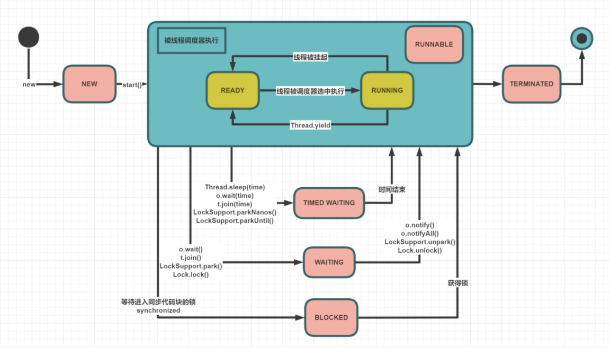

<!DOCTYPE html>
<html lang="en">

<!-- Head tag -->
<head>
    <meta charset="utf-8">
    <meta http-equiv="X-UA-Compatible" content="IE=edge">
    <meta name="google-site-verification" content="xBT4GhYoi5qRD5tr338pgPM5OWHHIDR6mNg1a3euekI" />
    <meta name="baidu-site-verification" content="093lY4ziMu" />
    <meta name="viewport" content="width=device-width, initial-scale=1, user-scalable=no">
    <meta name="description" content="张张的博客">
    <meta name="keyword"  content="爱技术、爱美食、爱生活">
    <link rel="shortcut icon" href="/img/ironman-draw.png">
    <!-- Place this tag in your head or just before your close body tag. -->
    <script async defer src="https://buttons.github.io/buttons.js"></script>
    <!--<link href='http://fonts.googleapis.com/css?family=Montserrat:400,700' rel='stylesheet' type='text/css'>-->
    <title>
        
          多线程基础 - Dante&#39;s blog
        
    </title>

    <link rel="canonical" href="https://dusign.net/2022/09/23/多线程-2022-09-23-多线程基础/">

    <!-- Bootstrap Core CSS -->
    
<link rel="stylesheet" href="/css/bootstrap.min.css">


    <!-- Custom CSS --> 
    
        
<link rel="stylesheet" href="/css/dusign-light.css">

        
<link rel="stylesheet" href="/css/dusign-common-light.css">

        
<link rel="stylesheet" href="/css/font-awesome.css">

        
<link rel="stylesheet" href="/css/toc.css">

        <!-- background effects end -->
    
    
    <!-- Pygments Highlight CSS -->
    
<link rel="stylesheet" href="/css/highlight.css">


    
<link rel="stylesheet" href="/css/widget.css">


    
<link rel="stylesheet" href="/css/rocket.css">


    
<link rel="stylesheet" href="/css/signature.css">


    
<link rel="stylesheet" href="/css/fonts.googleapis.css">


    <link rel="stylesheet" href="//cdn.bootcss.com/font-awesome/4.3.0/css/font-awesome.min.css">

    <!-- photography -->
    
<link rel="stylesheet" href="/css/photography.css">


    <!-- ga & ba script hoook -->
    <script></script>
<meta name="generator" content="Hexo 4.2.1"></head>


<!-- hack iOS CSS :active style -->
<body ontouchstart="">

    <!-- background effects start -->
    
    <!-- background effects end -->

	<!-- Modified by Yu-Hsuan Yen -->
<!-- Post Header -->
<style type="text/css">
    header.intro-header{
        
            
                background-image: linear-gradient(rgba(0, 0, 0, 0.3), rgba(0, 0, 0, 0.3)), url('../../../../img/default.jpg')
                /*post*/
            
        
    }
    
    #signature{
        background-image: url('/img/signature/dante.png');
    }
    
</style>

<header class="intro-header" >
    <!-- Signature -->
    <div id="signature">
        <div class="container">
            <div class="row">
                <div class="col-lg-8 col-lg-offset-2 col-md-10 col-md-offset-1">
                
                    <div class="post-heading">
                        <div class="tags">
                            
                              <a class="tag" href="/tags/#多线程" title="多线程">多线程</a>
                            
                        </div>
                        <h1>多线程基础</h1>
                        <h2 class="subheading"></h2>
                        <span class="meta">
                            Posted by Dante on
                            2022-09-23
                        </span>

                        
                            <div class="blank_box"></div>
                            <span class="meta">
                                Words <span class="post-count">531</span> and
                                Reading Time <span class="post-count">2</span> Minutes
                            </span>
                            <div class="blank_box"></div>
                            <!-- 不蒜子统计 start -->
                            <span class="meta">
                                Viewed <span id="busuanzi_value_page_pv"><i class="fa fa-spinner fa-spin"></i></span> Times
                            </span>
                            <!-- 不蒜子统计 end -->
                        

                    </div>
                

                </div>
            </div>
        </div>      
    </div>

    
    <div class="waveWrapper">
        <div class="wave wave_before" style="background-image: url('/img/wave-light.png')"></div>
        <div class="wave wave_after" style="background-image: url('/img/wave-light.png')"></div>
    </div>
    
</header>

	
    <!-- Navigation -->
<nav class="navbar navbar-default navbar-custom navbar-fixed-top">
    <div class="container-fluid">
        <!-- Brand and toggle get grouped for better mobile display -->
        <div class="navbar-header page-scroll">
            <button type="button" class="navbar-toggle">
                <span class="sr-only">Toggle navigation</span>
                <span class="icon-bar"></span>
                <span class="icon-bar"></span>
                <span class="icon-bar"></span>
            </button>
            <a class="navbar-brand" href="/">Dante&#39;s Blog</a>
        </div>

        <!-- Collect the nav links, forms, and other content for toggling -->
        <!-- Known Issue, found by Hux:
            <nav>'s height woule be hold on by its content.
            so, when navbar scale out, the <nav> will cover tags.
            also mask any touch event of tags, unfortunately.
        -->
        <div id="huxblog_navbar">
            <div class="navbar-collapse">
                <ul class="nav navbar-nav navbar-right">
                    <li>
                        <a href="/">Home</a>
                    </li>

                    

                        
                    

                        
                        <li>
                            <a href="/categories/">Categories</a>
                        </li>
                        
                    

                        
                        <li>
                            <a href="/about/">About</a>
                        </li>
                        
                    

                        
                        <li>
                            <a href="/tags/">Tags</a>
                        </li>
                        
                    

                        
                        <li>
                            <a href="/archive/">Archives</a>
                        </li>
                        
                    

                        
                        <li>
                            <a href="/photography/">Photography</a>
                        </li>
                        
                    
                    
                    
                </ul>
            </div>
        </div>
        <!-- /.navbar-collapse -->
    </div>
    <!-- /.container -->
</nav>
<script>
    // Drop Bootstarp low-performance Navbar
    // Use customize navbar with high-quality material design animation
    // in high-perf jank-free CSS3 implementation
    var $body   = document.body;
    var $toggle = document.querySelector('.navbar-toggle');
    var $navbar = document.querySelector('#huxblog_navbar');
    var $collapse = document.querySelector('.navbar-collapse');

    $toggle.addEventListener('click', handleMagic)
    function handleMagic(e){
        if ($navbar.className.indexOf('in') > 0) {
        // CLOSE
            $navbar.className = " ";
            // wait until animation end.
            setTimeout(function(){
                // prevent frequently toggle
                if($navbar.className.indexOf('in') < 0) {
                    $collapse.style.height = "0px"
                }
            },400)
        }else{
        // OPEN
            $collapse.style.height = "auto"
            $navbar.className += " in";
        }
    }
</script>


    <!-- Main Content -->
    <!-- Post Content -->
<article>
    <div class="container">
        <div class="row">

            <!-- Post Container -->
            <div class="
                col-lg-8 col-lg-offset-2
                col-md-10 col-md-offset-1
                post-container">

                <h2 id="线程状态"><a href="#线程状态" class="headerlink" title="线程状态"></a>线程状态</h2><p>线程的状态，是重点中的重点，在生产中遇到问题的时候，就需要观察线程状态来排查问题，比如用jstack查看堆栈信息时候，就需要重点关注block状态的线程。</p>
<h3 id="状态流转"><a href="#状态流转" class="headerlink" title="状态流转"></a>状态流转</h3><p></p>
<h3 id="状态的解释"><a href="#状态的解释" class="headerlink" title="状态的解释"></a>状态的解释</h3><ul>
<li>new: 线程刚刚创建，还没有启动</li>
<li>Runnable：可运行状态，可由线程调度器安排执行，具体分为：Ready等待调度，Running 正在执行</li>
<li>Waiting：等待被唤醒</li>
<li>Timed Waiting：隔一段时间，自动唤醒</li>
<li>Blocked：正在等锁</li>
<li>Terminated：线程结束</li>
</ul>
<h3 id="lock和synchronized的区别"><a href="#lock和synchronized的区别" class="headerlink" title="lock和synchronized的区别"></a>lock和synchronized的区别</h3><p>​    lock是用的juc的锁，基于cas实现，cas都是忙等，不是阻塞而是waiting，而synchronized是等锁，blocked，但两者都是阻塞态。</p>
<h2 id="线程启动"><a href="#线程启动" class="headerlink" title="线程启动"></a>线程启动</h2><p>介绍几种常见的线程启动的方式</p>
<ul>
<li><p>hread和Runnable 两种</p>
<figure class="highlight java"><table><tr><td class="gutter"><pre><span class="line">1</span><br><span class="line">2</span><br></pre></td><td class="code"><pre><span class="line"><span class="keyword">new</span> MyThread().start();</span><br><span class="line"><span class="keyword">new</span> Thread(<span class="keyword">new</span> MyRun()).start();</span><br></pre></td></tr></table></figure>
</li>
<li><p>ThreadPool</p>
<figure class="highlight java"><table><tr><td class="gutter"><pre><span class="line">1</span><br><span class="line">2</span><br><span class="line">3</span><br><span class="line">4</span><br></pre></td><td class="code"><pre><span class="line">ExecutorService service = Executors.newCachedThreadPool();</span><br><span class="line">service.execute(() -&gt; &#123;</span><br><span class="line">    System.out.println(<span class="string">"Hello ThreadPool"</span>);</span><br><span class="line">&#125;);</span><br></pre></td></tr></table></figure>
</li>
<li><p>ThreadPool和Callable</p>
<figure class="highlight java"><table><tr><td class="gutter"><pre><span class="line">1</span><br><span class="line">2</span><br><span class="line">3</span><br></pre></td><td class="code"><pre><span class="line">ExecutorService service = Executors.newCachedThreadPool();</span><br><span class="line">Future&lt;String&gt; f = service.submit(<span class="keyword">new</span> MyCall());</span><br><span class="line">String s = f.get();</span><br></pre></td></tr></table></figure>
</li>
<li><p>Thread和FutureTask</p>
<figure class="highlight java"><table><tr><td class="gutter"><pre><span class="line">1</span><br><span class="line">2</span><br><span class="line">3</span><br><span class="line">4</span><br></pre></td><td class="code"><pre><span class="line">FutureTask&lt;String&gt; task = <span class="keyword">new</span> FutureTask&lt;&gt;(<span class="keyword">new</span> MyCall());</span><br><span class="line">Thread t = <span class="keyword">new</span> Thread(task);</span><br><span class="line">t.start();</span><br><span class="line">System.out.println(task.get());</span><br></pre></td></tr></table></figure>
</li>
</ul>
<h2 id="线程打断"><a href="#线程打断" class="headerlink" title="线程打断"></a>线程打断</h2><h3 id="有关线程打断的三个方法"><a href="#有关线程打断的三个方法" class="headerlink" title="有关线程打断的三个方法"></a>有关线程打断的三个方法</h3><ul>
<li>interrupt方法:名为打断，但是一定注意，其本质是设置线程内部的中断标记位，发现标记修改后做什么样的反应，是线程自己实现</li>
<li>isInterrupt方法:查询标记位</li>
<li>interrupted方法:查询当前标记位是否被打断过，如果打断过，重置标记位</li>
</ul>
<h2 id="线程结束"><a href="#线程结束" class="headerlink" title="线程结束"></a>线程结束</h2><h3 id="优雅结束线程的几种方式"><a href="#优雅结束线程的几种方式" class="headerlink" title="优雅结束线程的几种方式"></a>优雅结束线程的几种方式</h3><h4 id="利用volatile变量设置标志位通知线程结束"><a href="#利用volatile变量设置标志位通知线程结束" class="headerlink" title="利用volatile变量设置标志位通知线程结束"></a>利用volatile变量设置标志位通知线程结束</h4><figure class="highlight java"><table><tr><td class="gutter"><pre><span class="line">1</span><br><span class="line">2</span><br><span class="line">3</span><br><span class="line">4</span><br><span class="line">5</span><br><span class="line">6</span><br><span class="line">7</span><br><span class="line">8</span><br><span class="line">9</span><br><span class="line">10</span><br><span class="line">11</span><br><span class="line">12</span><br><span class="line">13</span><br><span class="line">14</span><br><span class="line">15</span><br><span class="line">16</span><br></pre></td><td class="code"><pre><span class="line"><span class="keyword">private</span> <span class="keyword">static</span> <span class="keyword">volatile</span> <span class="keyword">boolean</span> running = <span class="keyword">true</span>;</span><br><span class="line"></span><br><span class="line"><span class="function"><span class="keyword">public</span> <span class="keyword">static</span> <span class="keyword">void</span> <span class="title">main</span><span class="params">(String[] args)</span> </span>&#123;</span><br><span class="line">    Thread t = <span class="keyword">new</span> Thread(() -&gt; &#123;</span><br><span class="line">        <span class="keyword">long</span> i = <span class="number">0L</span>;</span><br><span class="line">        <span class="keyword">while</span> (running) &#123;</span><br><span class="line">            <span class="comment">//wait recv accept</span></span><br><span class="line">            i++;</span><br><span class="line">        &#125;</span><br><span class="line">        System.out.println(<span class="string">"end and i = "</span> + i); <span class="comment">//4168806262 4163032200</span></span><br><span class="line">    &#125;);</span><br><span class="line"></span><br><span class="line">    t.start();</span><br><span class="line">    SleepHelper.sleepSeconds(<span class="number">1</span>);</span><br><span class="line">    running = <span class="keyword">false</span>;</span><br><span class="line">&#125;</span><br></pre></td></tr></table></figure>
<h4 id="利用interupt内部标记"><a href="#利用interupt内部标记" class="headerlink" title="利用interupt内部标记"></a>利用interupt内部标记</h4><figure class="highlight java"><table><tr><td class="gutter"><pre><span class="line">1</span><br><span class="line">2</span><br><span class="line">3</span><br><span class="line">4</span><br><span class="line">5</span><br><span class="line">6</span><br><span class="line">7</span><br><span class="line">8</span><br><span class="line">9</span><br><span class="line">10</span><br><span class="line">11</span><br></pre></td><td class="code"><pre><span class="line"><span class="function"><span class="keyword">public</span> <span class="keyword">static</span> <span class="keyword">void</span> <span class="title">main</span><span class="params">(String[] args)</span> </span>&#123;</span><br><span class="line">    Thread t = <span class="keyword">new</span> Thread(() -&gt; &#123;</span><br><span class="line">        <span class="keyword">while</span> (!Thread.interrupted()) &#123;</span><br><span class="line">            <span class="comment">//sleep wait</span></span><br><span class="line">        &#125;</span><br><span class="line">        System.out.println(<span class="string">"t1 end!"</span>);</span><br><span class="line">    &#125;);</span><br><span class="line">    t.start();</span><br><span class="line">    SleepHelper.sleepSeconds(<span class="number">1</span>);</span><br><span class="line">    t.interrupt();</span><br><span class="line">&#125;</span><br></pre></td></tr></table></figure>
<h4 id="利用park方法配合interupt"><a href="#利用park方法配合interupt" class="headerlink" title="利用park方法配合interupt"></a>利用park方法配合interupt</h4><figure class="highlight java"><table><tr><td class="gutter"><pre><span class="line">1</span><br><span class="line">2</span><br><span class="line">3</span><br><span class="line">4</span><br><span class="line">5</span><br><span class="line">6</span><br><span class="line">7</span><br><span class="line">8</span><br><span class="line">9</span><br><span class="line">10</span><br><span class="line">11</span><br></pre></td><td class="code"><pre><span class="line"><span class="function"><span class="keyword">public</span> <span class="keyword">static</span> <span class="keyword">void</span> <span class="title">main</span><span class="params">(String[] args)</span> </span>&#123;</span><br><span class="line">   Thread t = <span class="keyword">new</span> Thread(() -&gt; &#123;</span><br><span class="line">        System.out.println(<span class="string">"1"</span>);</span><br><span class="line">        LockSupport.park();</span><br><span class="line">        System.out.println(<span class="string">"2"</span>);</span><br><span class="line">    &#125;);</span><br><span class="line"></span><br><span class="line">    t.start();</span><br><span class="line">    SleepHelper.sleepSeconds(<span class="number">1</span>);</span><br><span class="line">    t.interrupt();</span><br><span class="line">&#125;</span><br></pre></td></tr></table></figure>

                
                <hr>
                <!-- Pager -->
                <ul class="pager">
                    
                    <li class="previous">
                        <a href="/2022/09/23/多线程-2022-09-23-Atomic类与CAS分析/" data-toggle="tooltip" data-placement="top" title="Atomic类与CAS分析">&larr; Previous Post</a>
                    </li>
                    
                    
                    <li class="next">
                        <a href="/2022/09/22/微服务-2022-09-22-SpringCache-使用总结/" data-toggle="tooltip" data-placement="top" title="SpringCache 使用总结">Next Post &rarr;</a>
                    </li>
                    
                </ul>

                <!-- tip start -->
                

                
                <div class="comment_notes">
                    <p>
                        This is copyright.
                    </p>
                </div>
                
                <!-- tip end -->

                <!-- Music start-->
                
                
<link rel="stylesheet" href="/css/music-player/fonts/iconfont.css">


<link rel="stylesheet" href="/css/music-player/css/reset.css">


<link rel="stylesheet" href="/css/music-player/css/player.css">


<div class="music-player">
    <audio class="music-player__audio" ></audio>
    <div class="music-player__main">
        <div class="music-player__blur"></div>
        <div class="music-player__disc">
            <div class="music-player__image">
                
            </div>
            <div class="music-player__pointer"></div>
        </div>
        <div class="music-player__controls">
            <div class="music__info">
                <h3 class="music__info--title">...</h3>
                <p class="music__info--singer">...</p>
            </div>
            <div class="player-control">
                <div class="player-control__content">
                    <div class="player-control__btns">
                        <div class="player-control__btn player-control__btn--prev"><i class="iconfont icon-prev"></i></div>
                        <div class="player-control__btn player-control__btn--play"><i class="iconfont icon-play"></i></div>
                        <div class="player-control__btn player-control__btn--next"><i class="iconfont icon-next"></i></div>
                        <div class="player-control__btn player-control__btn--mode"><i class="iconfont icon-loop"></i></div>
                    </div>
                    <div class="player-control__volume">
                        <div class="control__volume--icon player-control__btn"><i class="iconfont icon-volume"></i></div>
                        <div class="control__volume--progress player_progress"></div>
                    </div>
                </div>
                <div class="player-control__content">
                    <div class="player__song--progress player_progress"></div>
                    <div class="player__song--timeProgess nowTime">00:00</div>
                    <div class="player__song--timeProgess totalTime">00:00</div>
                </div>
            </div>
        </div>
    </div>
</div>


<script src="/js/music-player/utill.js"></script>


<script src="/js/music-player/jquery.min.js"></script>

<!-- netease; qqkg -->
<!--
<script src="/js/music-player/player.js?library=config.music.library.js"></script>
-->
<script src="../../../../js/music-player/player.js?library=netease&music=https://music.163.com/#/song?id=1371939273"></script>
                
                <!-- Music end -->

                <!-- Sharing -->
                
                <div class="social-share"  data-wechat-qrcode-helper="" align="center"></div>
                <!--  css & js -->
                <link rel="stylesheet" href="https://cdnjs.cloudflare.com/ajax/libs/social-share.js/1.0.16/css/share.min.css">
                <script src="https://cdnjs.cloudflare.com/ajax/libs/social-share.js/1.0.16/js/social-share.min.js"></script>
                
                <!-- Sharing -->

                <!-- gitment start -->
                
                <!-- gitment end -->

                <!-- 来必力City版安装代码 -->
                
                <!-- City版安装代码已完成 -->

                <!-- disqus comment start -->
                
                <!-- disqus comment end -->
            </div>
            
            <!-- Tabe of Content -->
            <!-- Table of Contents -->

    
      
        <aside id="sidebar">
          <div id="toc" class="toc-article">
          <strong class="toc-title">Contents</strong>
          
            
              <ol class="toc-nav"><li class="toc-nav-item toc-nav-level-2"><a class="toc-nav-link" href="#线程状态"><span class="toc-nav-number">1.</span> <span class="toc-nav-text">线程状态</span></a><ol class="toc-nav-child"><li class="toc-nav-item toc-nav-level-3"><a class="toc-nav-link" href="#状态流转"><span class="toc-nav-number">1.1.</span> <span class="toc-nav-text">状态流转</span></a></li><li class="toc-nav-item toc-nav-level-3"><a class="toc-nav-link" href="#状态的解释"><span class="toc-nav-number">1.2.</span> <span class="toc-nav-text">状态的解释</span></a></li><li class="toc-nav-item toc-nav-level-3"><a class="toc-nav-link" href="#lock和synchronized的区别"><span class="toc-nav-number">1.3.</span> <span class="toc-nav-text">lock和synchronized的区别</span></a></li></ol></li><li class="toc-nav-item toc-nav-level-2"><a class="toc-nav-link" href="#线程启动"><span class="toc-nav-number">2.</span> <span class="toc-nav-text">线程启动</span></a></li><li class="toc-nav-item toc-nav-level-2"><a class="toc-nav-link" href="#线程打断"><span class="toc-nav-number">3.</span> <span class="toc-nav-text">线程打断</span></a><ol class="toc-nav-child"><li class="toc-nav-item toc-nav-level-3"><a class="toc-nav-link" href="#有关线程打断的三个方法"><span class="toc-nav-number">3.1.</span> <span class="toc-nav-text">有关线程打断的三个方法</span></a></li></ol></li><li class="toc-nav-item toc-nav-level-2"><a class="toc-nav-link" href="#线程结束"><span class="toc-nav-number">4.</span> <span class="toc-nav-text">线程结束</span></a><ol class="toc-nav-child"><li class="toc-nav-item toc-nav-level-3"><a class="toc-nav-link" href="#优雅结束线程的几种方式"><span class="toc-nav-number">4.1.</span> <span class="toc-nav-text">优雅结束线程的几种方式</span></a><ol class="toc-nav-child"><li class="toc-nav-item toc-nav-level-4"><a class="toc-nav-link" href="#利用volatile变量设置标志位通知线程结束"><span class="toc-nav-number">4.1.1.</span> <span class="toc-nav-text">利用volatile变量设置标志位通知线程结束</span></a></li><li class="toc-nav-item toc-nav-level-4"><a class="toc-nav-link" href="#利用interupt内部标记"><span class="toc-nav-number">4.1.2.</span> <span class="toc-nav-text">利用interupt内部标记</span></a></li><li class="toc-nav-item toc-nav-level-4"><a class="toc-nav-link" href="#利用park方法配合interupt"><span class="toc-nav-number">4.1.3.</span> <span class="toc-nav-text">利用park方法配合interupt</span></a></li></ol></li></ol></li></ol>
            
          
          </div>
        </aside>
      
    

                
            <!-- Sidebar Container -->
            <div class="
                col-lg-8 col-lg-offset-2
                col-md-10 col-md-offset-1
                sidebar-container">

                <!-- Featured Tags -->
                
                <section>
                    <!-- no hr -->
                    <h5><a href="/tags/">FEATURED TAGS</a></h5>
                    <div class="tags">
                       
                          <a class="tag" href="/tags/#多线程" title="多线程">多线程</a>
                        
                    </div>
                </section>
                

                <!-- Friends Blog -->
                
            </div>
        </div>
    </div>
</article>


<!-- async load function -->
<script>
    function async(u, c) {
      var d = document, t = 'script',
          o = d.createElement(t),
          s = d.getElementsByTagName(t)[0];
      o.src = u;
      if (c) { o.addEventListener('load', function (e) { c(null, e); }, false); }
      s.parentNode.insertBefore(o, s);
    }
</script>
<!-- anchor-js, Doc:http://bryanbraun.github.io/anchorjs/ -->
<script>
    async("https://cdn.bootcss.com/anchor-js/1.1.1/anchor.min.js",function(){
        anchors.options = {
          visible: 'hover',
          placement: 'left',
          icon: 'ℬ'
        };
        anchors.add().remove('.intro-header h1').remove('.subheading').remove('.sidebar-container h5');
    })
</script>


<style  type="text/css">
    /* place left on bigger screen */
    @media all and (min-width: 800px) {
        .anchorjs-link{
            position: absolute;
            left: -0.75em;
            font-size: 1.1em;
            margin-top : -0.1em;
        }
    }
</style>


    <!-- Footer -->
    <!-- Footer -->
<footer>
    <div class="container">
        <div class="row">
            <div class="col-lg-8 col-lg-offset-2 col-md-10 col-md-offset-1">
                <ul class="list-inline text-center">

                

                

                

                

                

                

                

                </ul>
                <p class="copyright text-muted">
                    Copyright &copy; Dante 2026 
                    <!-- <br>
                    Powered by 
                    <a href="https://github.com/dusign/hexo-theme-snail" target="_blank" rel="noopener">
                        <i>hexo-theme-snail</i>
                    </a> | 
                    <iframe name="star" style="margin-left: 2px; margin-bottom:-5px;" frameborder="0" scrolling="0"
                        width="100px" height="20px"
                        src="https://ghbtns.com/github-btn.html?user=dusign&repo=hexo-theme-snail&type=star&count=true">
                    </iframe> -->
                </p>
            </div>
        </div>
    </div>

</footer>

<!-- jQuery -->

<script src="/js/jquery.min.js"></script>


<!-- Bootstrap Core JavaScript -->

<script src="/js/bootstrap.min.js"></script>


<!-- Custom Theme JavaScript -->

<script src="/js/hux-blog.min.js"></script>


<!-- Search -->

<script src="/js/search.js"></script>


<!-- async load function -->
<script>
    function async(u, c) {
      var d = document, t = 'script',
          o = d.createElement(t),
          s = d.getElementsByTagName(t)[0];
      o.src = u;
      if (c) { o.addEventListener('load', function (e) { c(null, e); }, false); }
      s.parentNode.insertBefore(o, s);
    }
</script>


<!-- jquery.tagcloud.js -->
<script>
    // only load tagcloud.js in tag.html
    if($('#tag_cloud').length !== 0){
        async("https://dusign.net/js/jquery.tagcloud.js",function(){
            $.fn.tagcloud.defaults = {
                //size: {start: 1, end: 1, unit: 'em'},
                color: {start: '#bbbbee', end: '#0085a1'},
            };
            $('#tag_cloud a').tagcloud();
        })
    }
</script>

<!--fastClick.js -->
<script>
    async("https://cdn.bootcss.com/fastclick/1.0.6/fastclick.min.js", function(){
        var $nav = document.querySelector("nav");
        if($nav) FastClick.attach($nav);
    })
</script>


<!-- Google Analytics -->


<script>
    // dynamic User by Hux
    var _gaId = 'UA-XXXXXXXX-X';
    var _gaDomain = 'yoursite';

    // Originial
    (function(i,s,o,g,r,a,m){i['GoogleAnalyticsObject']=r;i[r]=i[r]||function(){
    (i[r].q=i[r].q||[]).push(arguments)},i[r].l=1*new Date();a=s.createElement(o),
    m=s.getElementsByTagName(o)[0];a.async=1;a.src=g;m.parentNode.insertBefore(a,m)
    })(window,document,'script','//www.google-analytics.com/analytics.js','ga');

    ga('create', _gaId, _gaDomain);
    ga('send', 'pageview');
</script>


<!-- Baidu Tongji -->


<!-- Search -->

    <script type="text/javascript">      
        var search_path = "search.xml";
        if (search_path.length == 0) {
            search_path = "search.xml";
        }
    var path = "/" + search_path;
    searchFunc(path, 'local-search-input', 'local-search-result');
    </script>


<!-- busuanzi -->
<script async src="//busuanzi.ibruce.info/busuanzi/2.3/busuanzi.pure.mini.js"></script>


	<a id="rocket" href="#top" class=""></a>
	<script type="text/javascript" src="/js/totop.js?v=1.0.0" async=""></script>
    <script type="text/javascript" src="/js/toc.js?v=1.0.0" async=""></script>

    
        <!-- background effects line -->
        

        
            <script type="text/javascript" src="/js/mouse-click.js" content='[&quot;🌱&quot;,&quot;just do it&quot;,&quot;Live and learn&quot;,&quot;love life&quot;,&quot;Habit is a second nature&quot;,&quot;Life is a pure flame&quot;,&quot;You have to believe in yourself&quot;,&quot;And forever has no end&quot;,&quot;🍀&quot;]' color='[&quot;rgb(121,93,179)&quot; ,&quot;rgb(76,180,231)&quot; ,&quot;rgb(76,180,198)&quot; ,&quot;rgb(76,150,231)&quot; ,&quot;rgb(76,32,231)&quot; ,&quot;rgb(100,145,231)&quot; ,&quot;rgb(123,115,201)&quot; ,&quot;rgb(143,105,128)&quot; ,&quot;rgb(184,90,154)&quot;]'></script>
        

        <!-- background effects end -->
    

    <!--<script size="50" alpha='0.3' zIndex="-999" src="/js/ribbonStatic.js"></script>-->
    
        <script src="/js/ribbonDynamic.js"></script>
    
<script type="text/x-mathjax-config">
    MathJax.Hub.Config({
        tex2jax: {
            inlineMath: [ ["$","$"], ["\\(","\\)"] ],
            skipTags: ['script', 'noscript', 'style', 'textarea', 'pre', 'code'],
            processEscapes: true
        }
    });
    MathJax.Hub.Queue(function() {
        var all = MathJax.Hub.getAllJax();
        for (var i = 0; i < all.length; ++i)
            all[i].SourceElement().parentNode.className += ' has-jax';
    });
</script>
<script src="http://cdn.mathjax.org/mathjax/latest/MathJax.js?config=TeX-AMS-MML_HTMLorMML"></script>
</body>

</html>
